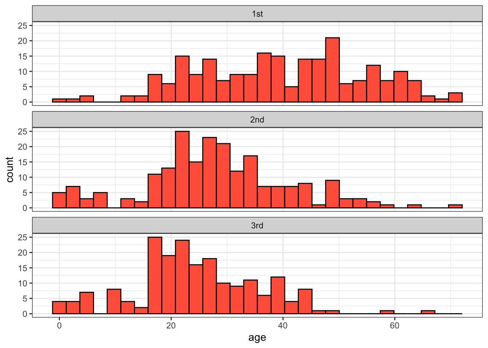

titanic_data <- read.csv("biol220_class/students/username/data/titanic.csv")11 Analysis of Variance
11.1 Learning the Tools
For the examples in this tutorial, we will again return to the Titanic data set. We’ll group passengers by the passenger class they traveled under (a categorical variable) and ask whether different passenger classes differed in their mean age (a numerical variable).
Let’s first look at the data to get a sense of how well it fits the assumptions of ANOVA. Multiple histogram are useful for this purpose. As we saw in previous weeks, we can use ggplot() and facets to make this plot:
ggplot(titanic_data, aes(x = age)) +
geom_histogram(fill = "tomato", color = "black") +
facet_wrap(~ passenger_class, ncol = 1) +
theme_bw()
These data look sufficiently normal and with similar spreads that ANOVA would be appropriate.
11.1.1 ANOVA
Analysis of variance (or ANOVA) for categorical explanatory data works very similarly to ANOVA applied to regression analysis. In both cases, we use the lm function to make a model. For ANOVA with categorical data we then supply the output of the lm function to the anova function which completes the analysis of variance.
As we know, the function lm() needs a formula and a data frame as arguments. The formula always takes the form of a response variable, followed by a tilde (~), and then at least one explanatory variable. In the case of a one-way ANOVA, this model statement will take the form
numerical_variable ~ categorical_variable
For example, to compare differences in mean age among passenger classes on the Titanic, this formula is:
age ~ passenger_class
This formula tells R to “fit” a model in which the ages of passengers are grouped by the variable passenger_class.
The name of the data frame containing the variables stated in the formula is the second argument of lm(). Finally, to complete the lm() command, it is necessary to save the intermediate results by assigning them to a new object, which anova() can then use to make the ANOVA table. For example, here we assign the results of lm() to a new object named “titanicANOVA”:
titanicANOVA <- lm(age ~ passenger_class, data = titanic_data)The function anova() takes the results of lm() as input and returns an ANOVA table as output:
anova(titanicANOVA)Analysis of Variance Table
Response: age
Df Sum Sq Mean Sq F value Pr(>F)
passenger_class 2 26690 13344.8 75.903 < 2.2e-16 ***
Residuals 630 110764 175.8
---
Signif. codes: 0 '***' 0.001 '**' 0.01 '*' 0.05 '.' 0.1 ' ' 1This table shows the results of a test of the null hypothesis that the mean ages are the same among the three groups. The P-value is very small, and so we reject the null hypothesis of no differences in mean age among the passenger classes.
11.1.2 Tukey-Kramer test
A single-factor ANOVA can tell us that at least one group has a different mean from another group, but it does not inform us which group means are different from which other group means. A Tukey-Kramer test lets us test the null hypothesis of no difference between the population means for all pairs of groups. The Tukey-Kramer test (also known as a Tukey Honest Significance Test, or Tukey HSD), is implemented in R in the function TukeyHSD().
We will use the results of an ANOVA done with lm() as above, that we stored in the variable titanicANOVA. To do a Tukey-Kramer test on these data, we need to first apply the function aov() to titanicANOVA, and then we need to apply the function TukeyHSD to the result. We can do this in a single command:
TukeyHSD(aov(titanicANOVA)) Tukey multiple comparisons of means
95% family-wise confidence level
Fit: aov(formula = titanicANOVA)
$passenger_class
diff lwr upr p adj
2nd-1st -11.367459 -14.345803 -8.389115 0.0000000
3rd-1st -15.148115 -18.192710 -12.103521 0.0000000
3rd-2nd -3.780656 -6.871463 -0.689849 0.0116695The key part of this output is the table at the bottom. It estimates the difference between the means of groups (for example, the 2nd passenger class compared to the 1st passenger class) and calculates a 95% confidence interval for the difference between the corresponding population means. (“lwr” and “upr” correspond to the lower and upper bounds of that confidence interval for the difference in means.) Finally, it give the P-value from a test of the null hypothesis of no difference between the means (the column headed with “p adj”). In the case of the Titanic data, P is less than 0.05 in all pairs, and we therefore reject every null hypothesis. We conclude that the population mean ages of all passenger classes are significantly different from each other.
11.1.3 Kruskal-Wallis
A Kruskal-Wallis test is a non-parametric analog of a one-way ANOVA. It does not assume that the variable has a normal distribution. (Instead, it tests whether the variable has the same distribution with the same mean in each group.)
To run a Kruskal-Wallis test, use the R function kruskal.test(). The input for this function is the same as we used for lm() above. It includes a model formula statement and the name of the data frame to be used.
kruskal.test(age ~ passenger_class, data = titanic_data)
Kruskal-Wallis rank sum test
data: age by passenger_class
Kruskal-Wallis chi-squared = 116.08, df = 2, p-value < 2.2e-16You can see for the output that a Kruskal-Wallis test also strongly rejects the null hypothesis of equality of age for all passenger class groups with the Titanic data.
11.2 Questions
- The European cuckoo does not look after its own eggs, but instead lays them in the nests of birds of other species. Previous studies showed that cuckoos sometimes have evolved to lay eggs that are colored similarly to the host bird species’ eggs. Is the same true of egg size—do cuckoos lay eggs similar in size to the size of the eggs of their hosts? The data file “cuckooeggs.csv” in the data folder contains data on the lengths of cuckoo eggs laid in the nests of a variety of host species. Here we compare the mean size of cuckoo eggs found in the nests of different host species.
- Plot a multiple histogram showing cuckoo egg lengths by host species.
- Look at the graph. For these data, would ANOVA be a valid method to test for differences between host species in the lengths of cuckoo eggs in their nests?
- Use ANOVA to test for a difference between host species in the mean size of the cuckoo eggs in their nests. What is your conclusion?
- Assuming that ANOVA rejected the null hypotheses of no mean differences, use a Tukey-Kramer test to decide which pairs of host species are significantly different from each other in cuckoo egg mean length. What is your conclusion?
- Animals that are infected with a pathogen often have disturbed circadian rhythms. (A circadian rhythm is an endogenous daily cycle in a behavior or physiological trait that persists in the absence of time cues.) Shirasu-Hiza et al. (2007) wanted to know whether it was possible that the circadian timing mechanism itself could have an effect on disease. To test this idea they sampled from three groups of fruit flies: one “normal”, one with a mutation in the timing gene tim01, and one group that had the tim01 mutant in a heterozygous state. They exposed these flies to a dangerous bacteria, Streptococcus pneumoniae, and measured how long the flies lived afterwards, in days. The date file “circadian mutant health.csv” shows some of their data.
- Plot a histogram of each of the three groups. Do these data match the assumptions of an ANOVA?
- Use a Kruskal-Wallis test to ask whether lifespan differs between the three groups of flies.